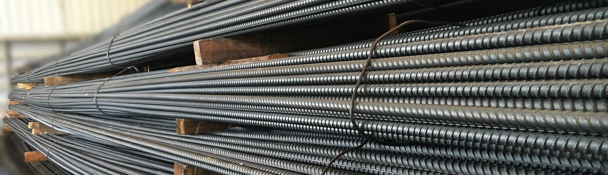
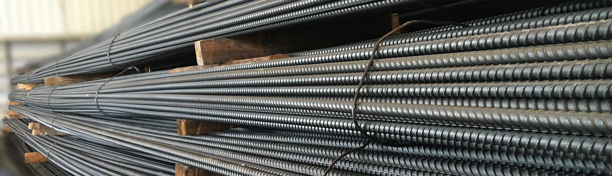
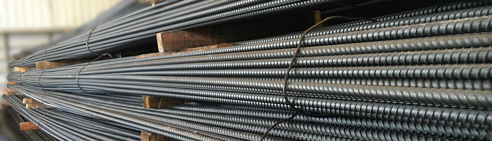

建瓴物料 基于人工智能的物料采购及管理平台
目前工地物料缺乏统一管理，工人乱领、错领、偷领物料的现象频发，使工地增加了大量不必要的损失。建瓴物料为工地提供了基于人工智能的物料管理平台，使物料管理正规化、智能化，让物料可追溯。同时建瓴物料还拥有物料采购平台，联合采购商和供应商，提高采购效率，降低采购成本

目前工地物料缺乏统一管理，工人乱领、错领、偷领物料的现象频发，使工地增加了大量不必要的损失。建瓴物料为工地提供了基于人工智能的物料管理平台，使物料管理正规化、智能化，让物料可追溯。同时建瓴物料还拥有物料采购平台，联合采购商和供应商，提高采购效率，降低采购成本


 虹软中国
虹软中国